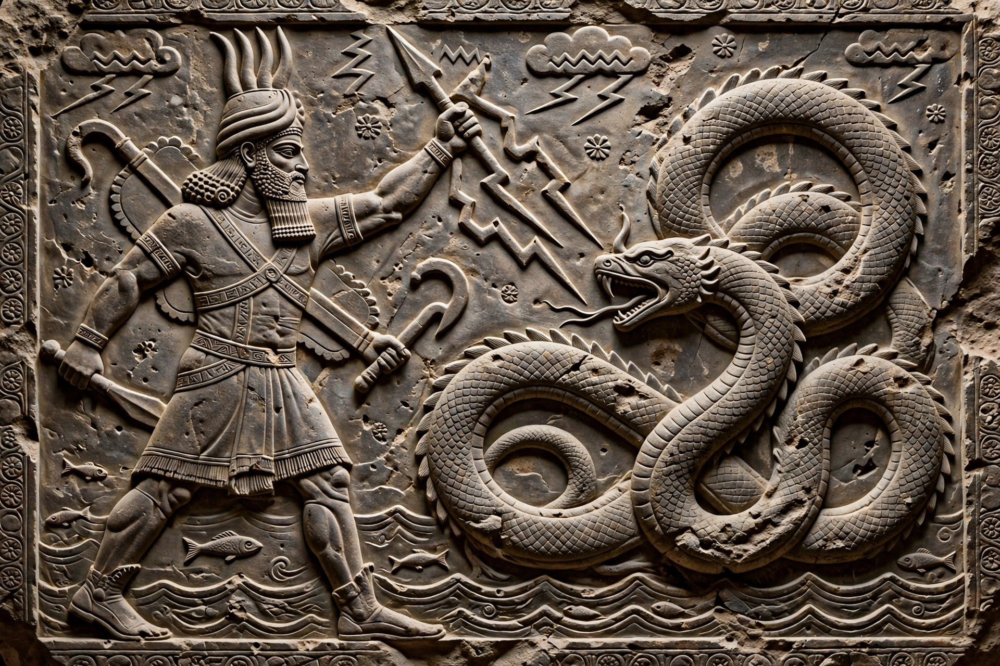

| Motif | Creation myth, divine combat |
|---|---|
| Examples | Marduk vs Tiamat; Baal vs Yam; Yahweh vs Leviathan; Zeus vs Typhon; Thor vs Jormungandr |
Chaoskampf (German, "struggle against chaos") is a motif in comparative mythology in which a culture hero or storm god battles a chaos monster, often a serpent or dragon associated with water, before ordering the world.
Examples
In the Babylonian Enuma Elish, Marduk defeats the salt-water goddess Tiamat and forms the cosmos from her body. Ugaritic texts show Baal fighting Yam and Lotan; the Hebrew Bible preserves echoes in Psalms and Isaiah of God defeating Leviathan and Rahab. Greek myth has Zeus against Typhon, and Norse myth Thor against the world serpent Jormungandr.
Interpretation
Scholars have debated how far these parallels reflect diffusion from the ancient Near East versus independent development, and how the motif legitimised kingship and cosmic order.